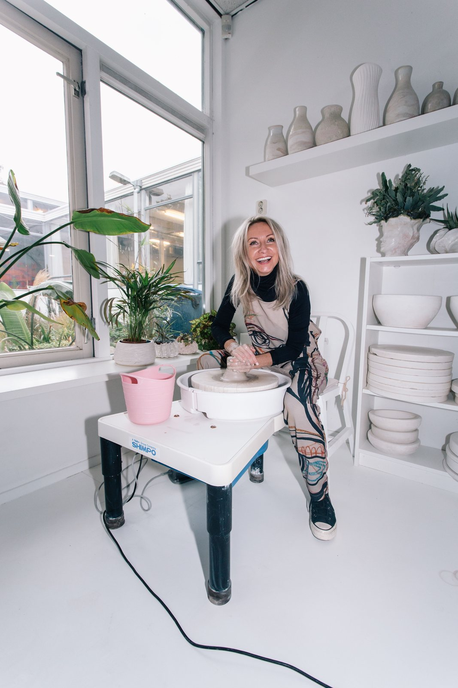

MAISON D'ARTISTE · SIXTH FLOOR
Natalia Wyspianska
Sculptural stoneware that sits between function and abstraction — wheel-thrown, hand-built and altered, with coral reefs and marine ecosystems as a constant point of reference. Firing is left to complete what the hand began.
Message Natalia on WhatsApp · Instagram — @_natelier_

Werken
Terra no 6 (set of 2)
Stoneware · 15 × 12 × 36 cm (w × d × h) € 850,– · available MAISONDARTISTE-NW-12All prices include VAT. 100% of the sale proceeds go to the artist.
Practice
Natalia Wyspianska is a ceramic artist based in Amsterdam, whose practice explores the relationship between nature and the forces that shape the world around us.
Working primarily in stoneware, she makes sculptural, organic forms that sit between function and abstraction. Her pieces are made through a combination of wheel throwing, hand-building and altering, allowing the material to retain traces of movement, pressure and touch. Layered surfaces and tactile textures transform familiar ceramic forms into something more visceral and alive.
Nature is a constant point of reference within her work. Inspired by coral reefs, marine ecosystems, plants and organic forms, she explores the beauty of movement and imperfection through shape, texture and colour.
Her process is deliberately slow and intuitive. Rather than seeking perfect symmetry or control, she embraces irregularity and the evidence of the hand. Each piece develops through a dialogue between intention and material, with firing becoming an essential part of the process - a moment when the artist ultimately must surrender control.
Why this maker, and where
Wyspianska works at the scale of things people live with, and her forms ask for none of the ceremony a plinth usually demands. Set into rooms built for rest, they introduce a different tempo: rims still lifting, surfaces opened into pore and cavity, matter held at the moment the kiln took control.
The palette completes the argument. The pale Aqua and Shell works recede into daylight and return at dusk; the Terra pieces absorb the warmth of a room and darken with it. Nothing here settles into decoration. The house is asked to accommodate something that is, quietly, still in motion.
In brief
Milan Design Week
Circolare, Isola Design — 2023Dutch Design Week
Isola Design Community, Eindhoven — 2022Kunstmarkt Noord
Expocafé Zamen, AmsterdamBouw Pop-Up
De Wallen Festival, AmsterdamWOW Amsterdam
Art sale and store, AmsterdamOpen Studios
Broedplaats BOUW, Amsterdam100% of the sale proceeds go to the maker. MADART Foundation takes no commission and holds no exclusive contract. Enquiries go directly to Natalia Wyspianska.